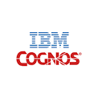
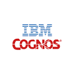

Software Development
We want to change your mind about custom software development. We want to show you that it can be low-risk, high-benefit, and frustration-free. There has never been a better time for technology to solve everyday problems.
People
Jade Systems is me, Larry Reid. I've worked in the IT field since 1978, when I was paid to be a Unix v6 system administrator at the University of Saskatchewan. I've had my own start-up, worked as an employee, and contracted to such clients as Nortel, Cognos, Canada Post, BMW America, Canada Centre for Remote Sensing, Australian Centre for Remote Sensing, HealthSouth, SourceMed, Vancouver Coastal Health, ICBC, Teck Resources, and BC Hydro.
 


I got a B. Sc. with High Honours in Computational Science from the University of Saskatchewan in 1980. From there, I wrote software for a few different companies, before joining the first personal computer revolution, writing software for the CP/M operating system.
Over the years I've been a programmer, architect, database administrator, system administrator. I was doing test driven development in the early nineties, before we even had the term. My system builds and deploys were automated -- what we now call DevOps. Later, I was a development director, and project manager, and branched into infrastructure.
But what motivates me most is simply to create systems that solve someone's problems. So I'm now focussing on programming again, primarily web applications, and primarily on Ruby on Rails. I'm open to contract opportunities or full-time employment.
Knowledge
I believe in sharing what I know and do. I blog, contribute to the bootstrap_form gem, publish two other Ruby gems, devise-bootstrap-form, and gaapi to query Google Analytics, and am starting a knowledge base here on this site.